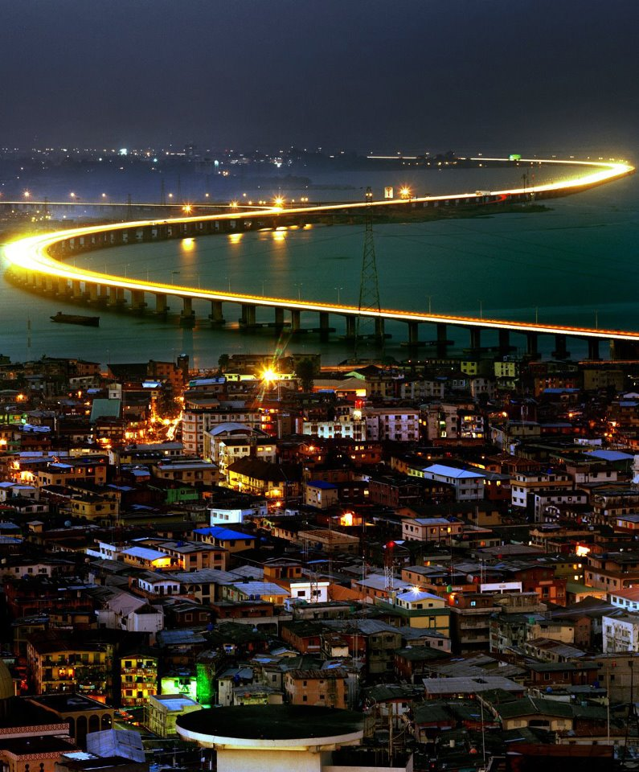

I was born in Bronx, New York, and Raised in Lagos Nigeria. I lived in Nigeria for 15 years before moving back to the United States to finish my last year of high school and pursue my Bachelor's degree at Michigan State University.
I am the last child out of seven of seven children, I have four brothers and two sisters.
Nigeria is a very fun place to be, I went to the best private schools for my elementary, junior and senior high. I am from Lagos, one of the highest populated cities in Africa.